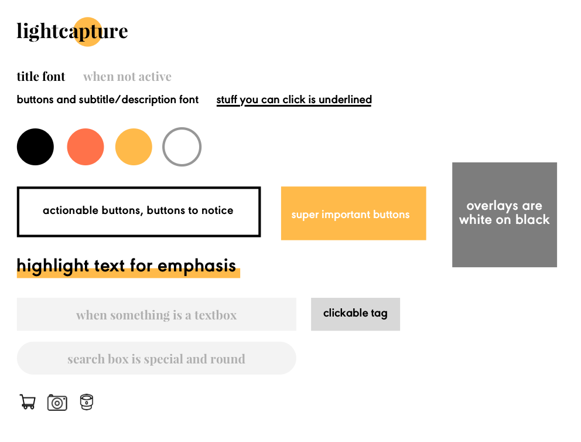
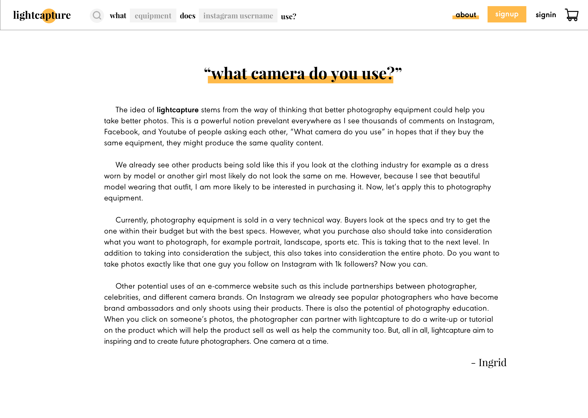

This is a project where I challenged myself to create a brand new e-commerce product page user experience from scratch within a week.
lightcapture was a personal project I undertook to design an e-commerce page for a physical product. I gave myself the time constraint of one week with time at the end of the week to user test and ask for feedback.
The target users include:
- beginners to photography
- people who do not fully understand/care about camera technical specs
- people who are active on social media (esp. Instagram)
- people who have GAS (gear acquisition syndrome) who are easily tempted into buy more camera gear than they need
The ‘light’ or sun highlights ‘apt' in the title to hint at how buying on lightcapture is enough and good. The color yellow represents light.
A summary of the reasoning behind lightcapture and potential future use cases.
The user can still browse and buy, but the page is just not personalized to you when you first arrive. Login is through Instagram. Future collaboration can be done with other photo sharing sites or even Youtube (video sharing).
The main driving point is through the search bar in the middle of the page which fits the goal of the website (see about page). However there is also a search bar on the top which is for easy user experience nav purposes throughout the site.

The names of the camera and lens are clickable links to the specific product pages or you can see both products side by side (not pictured) if you click on the setup link on the bottom.
All images are credited via photographer and pulled from Instagram given the photographer's account is public. Photos taken with any camera contains the device’s data.

The discovery is catered to your feed and what the site remembers you bought in the past. Here, Fujifilm cameras are highlighted because the user either 1) searched about Fujifilm before or 2) owns Fujfilm products. Another idea I had (not designed) is when you set up your profile, you have the option to ‘add your gear’ which will help personalize your feed. (Think netflix).
The 'Explore New Gear' section on the bottom is a general explore/discovery tailored to people you haven’t seen before.

This is the feed page when you log in (if you don’t log in, this page would just be empty state asking you to login to get started). It mirrors your Instagram (IG) feed but it summarizes what gear is on your feed to entice you to look into these products. The tags above are clickable to individual product page, organized by most used to least.
Possible future exploration and iteration include customization of the organization of tags

When you search through the sentence construction seach box you have the option to discover what your favourite photographershoots with. Currently you can only select one. Future iterations include maybe & function to look at more than one.
Settings is less about buying but more about learning photography. However, knowing how amazing one’s camera settings are can also encourage purchases. Possible expansion include an education side to this website!
Notes:
- Setup means all - lens, camera, everything the photographer used.
- The photographer search box is pulled from how Instagram searches users.


The search bar collapses on to the top bar. The top search becomes an icon. Will expand if clicked on though. You can click on the tags, the links, or the camera images to get to the product page.
Here the main goal is to get to the product page and buy some cameras!

This page is designed so the user will be more inclined to buy the camera. Hover or click to see a potential buyer’s point of view below.

After I designed everything and laid out the basic description and navigation. I sent this to four people to user test. Two of them were photographers with varying degrees of experience, one was not a photographer but active on Instagram, and one was a beginner photographer.
To the two people with less experience in photography, the photos were really enticing and ‘nice to look at’ and one remarked it was interesting to ‘stalk their favorite photographers’ and figure out their setup. One photographer remarked this site was ‘very bad for his wallet’ because it only made him want to buy more gear even though he had the knowledge to understand that his own gear was technically fine. The people with more experience used the search bar on top more because they knew what they were looking for while the beginners and the user who was not a photographer liked browsing through photos more.
Most people (especially the people who were just hobbyists) unfortunately bypassed the what _ equipment does _ use? search bar because they felt they did not know specific photographers to search people by name. Another point of criticism was that the photos were a little overwhelming and looked ‘all the same, though all very nice’ to someone who had little experience which still created the barrier of where to start? Would this replace one’s Instagram feed altogether? Also, there was confusion in how the photos were ordered since I did not have a timestamp or singular timeline flow as seen on Instagram.
Another point to think about is what this would look like on mobile. Wouldn't this just look like Instagram?
*Photos supplied my lovely friends @kevinmlee.x, coryiander, and my own feed